No silver bullet exists for Virtual Reality (VR) locomotion. Many scientific papers have proposed new locomotion techniques, some have compared techniques, and there have been attempts to classify locomotion types into taxonomies. Our goal is to help unify research in this field by creating a shared community-sourced database of locomotion techniques and evaluation criteria. In this workshop, we will present LocomotionVault as our attempt to make a step in this direction. We hope to motivate the discussion of existing taxonomies, evaluation criteria, and challenges to unify research in this field.
In the last decade, numerous Virtual Reality (VR) locomotion techniques (LTs) have been invented, reinvented, combined and modified. Each of the LTs has a unique mix of idiosyncratic characteristics. Newly proposed LTs are usually compared to one or a few other LTs to find their advantages and disadvantages. Researchers have proposed several taxonomies and criteria for describing and evaluating LTs (e.g. in terms of the hardware employed, their granularity, accessibility, etc.). Yet, no agreement exists on which evaluation criteria or taxonomies are the most important when selecting an LT or designing a new one.
Our goal is to unify research in the field by creating shared communitysourced evaluation criteria and datasets for locomotion in VR. To this end, we have created LocomotionVault (https://locomotionvault.github.io/. ), an interactive visual database of more than one hundred VR LTs from academia and industry. Each LT is described according to numerous attributes that we collated from existing VR taxonomies which give a similarity score between techniques.
In this workshop, we aim to bring VR locomotion researchers together to discuss existing taxonomies and evaluation criteria for VR LTs, challenges in design and evaluation of LTs in such a rapidly-growing space, and potential community-driven tools and initiatives that can move the field forward. We aim to tackle these important topics with talks of the accepted abstracts followed by lively discussions with the attendees.
Submissions should include a title, a list of authors, a 2-page description of the proposed topic in TVCG format. Additional pages can be considered on a case by case basis, but you should check with the workshop organizers (margon@microsoft.com) before the submission deadline. Acceptable paper types are work-in-progress, research papers, position papers, or commentaries. Submissions will be reviewed by the organisers and accepted submissions will give a 20-minute talk with a panel discussion at the end of the session. At least one author must register for the workshop. Selected submissions will get the opportunity to be extended to articles to be considered for a special issue.
To submit your work, visit https://new.precisionconference.com/vr
Mar Gonzalez-Franco is a Researcher at Microsoft Research. She earned her PhD in Immersive Virtual Reality and Clinical Psychology under the supervision of Prof. Mel Slater at the Experimental Virtual Environments for Neuroscience and Technology Lab (EVENT-Lab), affiliated as a visiting student at the MIT MediaLab – Massachusetts Institute of Technology. During her PhD she produced anarchic hand experiences into healthy humans, as well as stabbed their virtual hands, indeed virtual reality is probably the only platform where you can do all of that and get away with the ethics committee. She then did a post-doc at University College London’s Virtual Environments and Computer Graphics (UCL-VECG) group. Willing to impact larger audiences she pivoted into industrial laboratories; she created and led an immersive tech lab at Airbus Group in the UK and later joined Traity as a Research Scientist, working on the creation of reputation standards for a user base of 4.5M.
Altogether Dr Gonzalez-Franco explores how our brain perceives our body and she searches the underlying mechanisms that determine what is real and what is not. Technologically, she employs real-time computer graphics, HMDs and body tracking systems.
Hasti Seifi is a tenure-track assistant professor in the Department of Computer Science at the University of Copenhagen. Previously, she was an NSERC postdoctoral fellow at the Max Planck Institute for Intelligent Systems with Dr. Katherine J. Kuchenbecker and a Ph.D. student in the Department of Computer Science at the University of British Columbia with Professor Karon E. MacLean.
Her research is at the intersection of human-computer interaction, programmable touch technology (haptics), and social robotics. Specifically, Dr. Seifi studies how users interact with and make sense of haptic feedback from devices and robots through qualitative and quantitative studies. With this foundation, she designs touch experiences that are meaningful and pleasant, and she builds collections and software tools that facilitate creation and adaptation of touch experiences by endusers, novice designers, and haptics experts.
Massimiliano Di Luca is senior lecturer at the University of Birmingham in the Computational Neuroscience and Cognitive Robotics research centre. He earned the Laurea in Psychology from the Università di Trieste in 2000 and the PhD in Cognitive Science from Brown University in 2006. During his carer, Dr Di Luca has been Scientist at the Max Planck Institute for Biological Cybernetics in Tübingen, Visiting Scientist at Oculus Research and Research Scientist at Facebook Reality Labs.
Dr Di Luca performs both fundamental and applied research to capture the traits of effective sensory feedback and understand how users employ such stimuli. He uses psychophysical experiments, neuroimaging methods, and signal processing to discover patterns in user interactions and cognitive states. The leitmotiv of his research is to create computational models that constitute quantitative and testable theories about the underlying cognitive and neural processes.
| 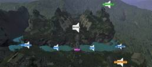 |
Revisiting Audiovisual Rotation Gains for Redirected Walking
Andreas Junker, Carl Hutters, Daniel Boonma Reipur, Lasse Embøl Sørensen, Niels Christian Nilsson, Evan Suma Rosenberg, Stefania Serafin |
|
|
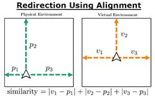 |
Redirection Using Alignment
Niall L. Williams, Aniket Bera, Dinesh Manocha |
|
| 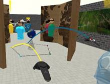 |
An Overview of Group Navigation in Multi-User Virtual Reality
Tim Weissker, Pauline Bimberg, Bernd Froehlich |
|
|
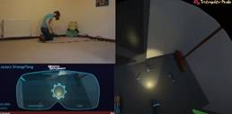 |
Misc learning while making commercial games
Katie Goode |
|
|
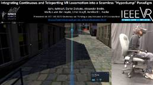 |
Integrating Continuous and Teleporting VR Locomotion into a
Seamless “ HyperJump” Paradigm
Ashu Adhikari, Daniel Zielasko, Alexander Bretin, Markus von der Heyde, Ernst Kruijff Bonn-Rhein-Sieg, Bernhard Riecke |
|
|
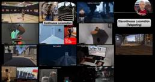 |
Continuous vs. Discontinuous (Teleport) Locomotion in VR: How
Implications can Provide both Benefits and Disadvantages
Bernhard Riecke, Daniel Zielasko |
|
|
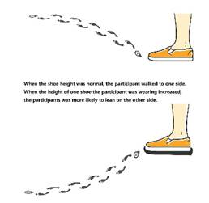 |
Direction change of redirected walking
via a single shoe height change
YanXiang Zhang, Jiao Hong |
|
|
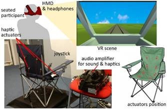 |
Multisensory Teleportation in Virtual Reality Applications
Francesco Soave, Ildar Farkhatdinov, Nick Bryan-Kinns |
|
|
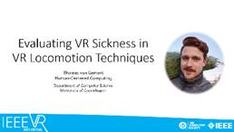 |
Evaluating VR Sickness in VR Locomotion Techniques
Thomas van Gemert, Joanna Bergström |
|
|
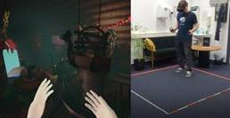 |
Combining Natural Techniques to Achieve Seamless Locomotion in
Consumer VR Spaces
Hannah Paulmann, Tim Mayer, Marc Barnes, Dennis Briddigkeit, Frank Steinicke, Eike Langbehn |
|
| 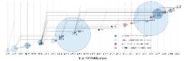 | An Overview and Analysis of Publications on Locomotion
Taxonomies
Lisa Marie Prinz, Tintu Mathew, Simon Klüber, Benjamin Weyers |
|
|
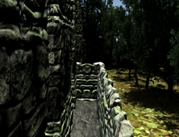 |
Impossible Open Spaces: Exploring the Effects of Occlusion on
the Noticeability of Self-Overlapping Virtual Environments
Claudiu-Bogdan , Cristian Patras, Mantas Cibulskis, Norbert Varadi, Niels Christian Nilsson |
|
|
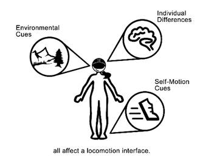 (Credit image: Emily Oldham) |
The Effectiveness of Locomotion Interfaces Depends on
Self-Motion Cues, Environmental Cues, and the Individual
Jonathan Kelly, Stephen B. Gilbert |
|
| 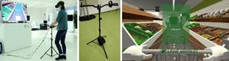 | Effects of a handlebar on standing VR locomotion
Paul Chojecki, David Przewozny, Detlef Runde, Mustafa-Tevfik Lafci, Sebastian Bosse |
|
|
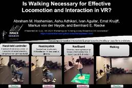 |
Is Walking Necessary for Effective Locomotion and Interaction in
VR?
Abraham M. Hashemian, Ashu Adhikari, Ivan A Aguilar, Ernst Kruijff Bonn-Rhein-Sieg, Markus von der Heyde, Bernhard Riecke |